Исследование работы трансформатора
Опыт 1
- Подключаем первичную обмотку трансформатора к сети 220 В.
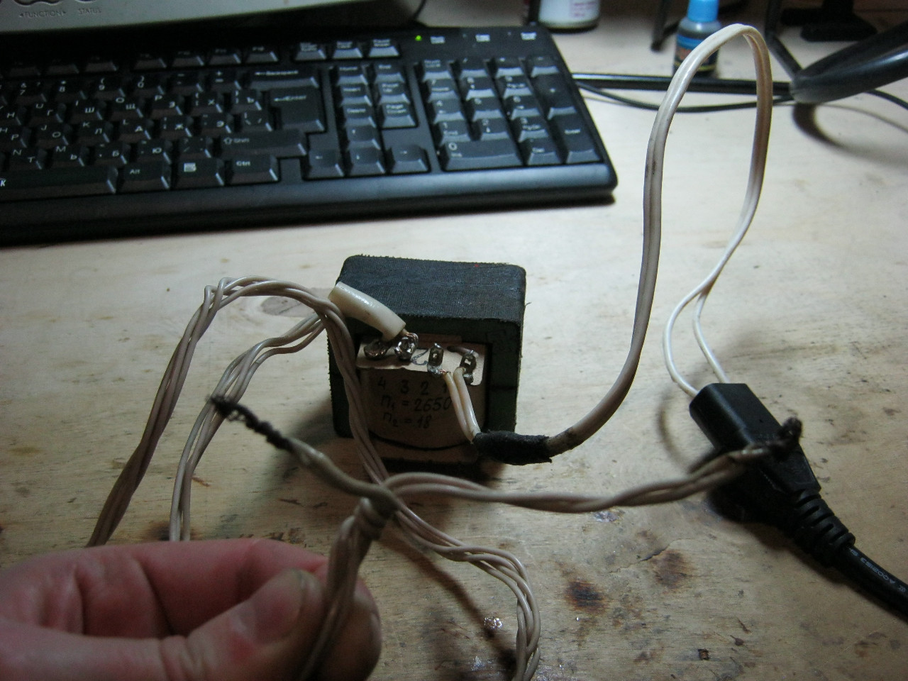
Рис. 1 - Подключение трансформатора к сети 220 В
- Поставим мультиметр на предел измерения перменного напряжения 750 В и измерим напряжение на первичной обмотке (напряжение сети).
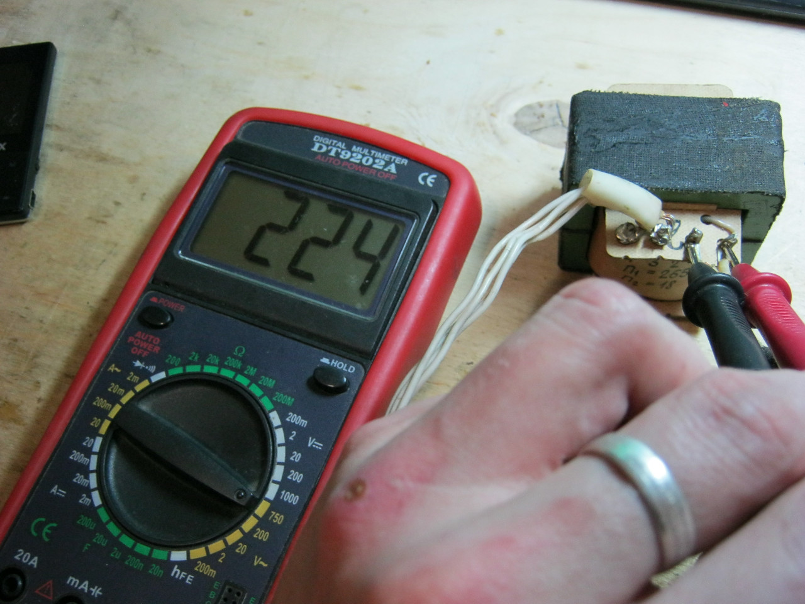
Рис. 2 -
- Измеряем напряжение на вторичной обмотке.
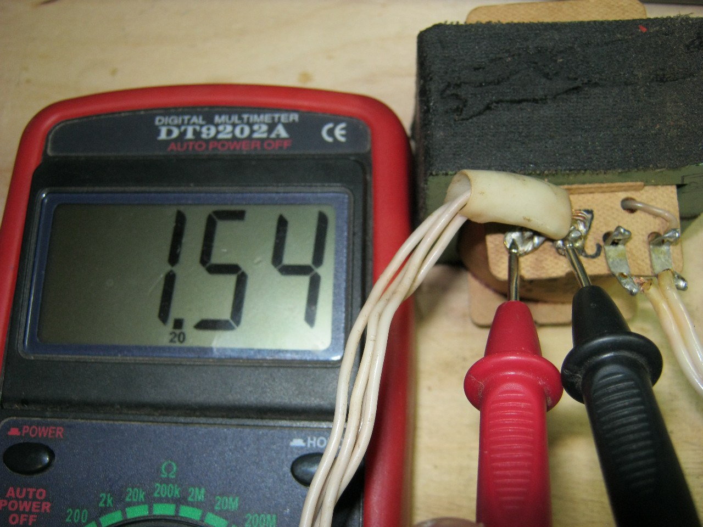
Рис. 3 -
- Проверим соотношение
Для нашего примера:
1,54/224=0,006875 (коэффициент отношения напряжения)
18/2650=0,006792 (коэффициент отношения обмоток)
Погрешность связана с потерями на нагрев обмоток трансформатора и магнитопровода, а также погрешность измерения мультиметра.
Опыт 2
- Для изготовления нагрузки последовательно соедините две лампочки накаливания по 13,5 В (рис. 4). Каждая лампочка потребляет силу тока по 0,12 А. Так как лампочки одинаковы, они поровну делят напряжение: каждой лампочке достается по 11 В, следовательно и силу тока каждая лампочка получает меньше, около 0,1 А.
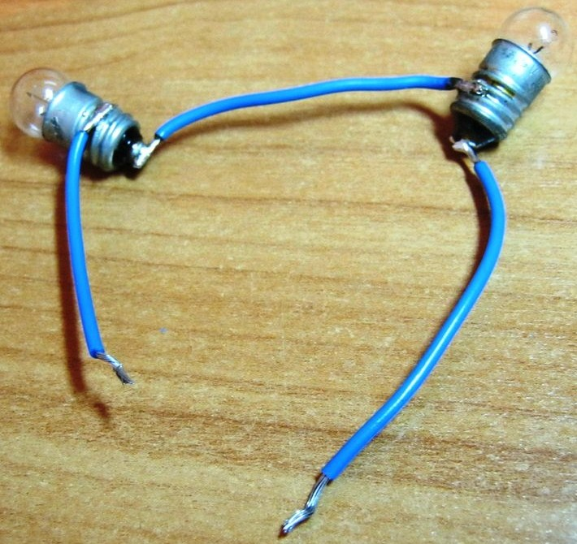
Рис. 4 - Нагрузка
- Измерьте силу тока потребляемую трансформатором в холостом режиме. Холостой режим означает, что ко вторичной обмотке трансформатора не подключена нагрузка. Амперметр подключите последовательно с первичной обмоткой. (рис. 5).
В нашем примере амперметр показывает 60 мА.
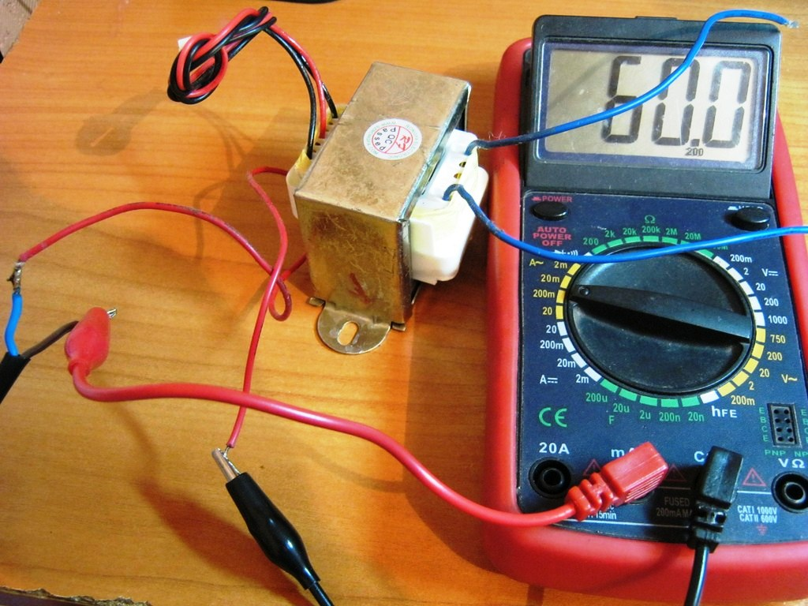
Рис. 5 - Измерение тока холостого хода
Вывод: На вторичной обмотке трансформатора нету нагрузки, но трансформатор все равно потребляет ток, а следовательно электрическую энергию из розетки.
Если вычислить мощность, то получим
P = IU = 230×0,06 = 13,8 [Вт].
Если трансформатора простоит включенным хотя бы 1 час, то у нас он съест электроэнергию 13,8 Вт·час или 0,0138кВт·час. Поэтому, не рекомендуется оставлять в сети электроприборы, имеющие трансформаторный блок питания.
- Подключите лампочки ко вторичной обмотке. Лампочки загорелись, и сила тока на первичной обмотке тоже поменялась.
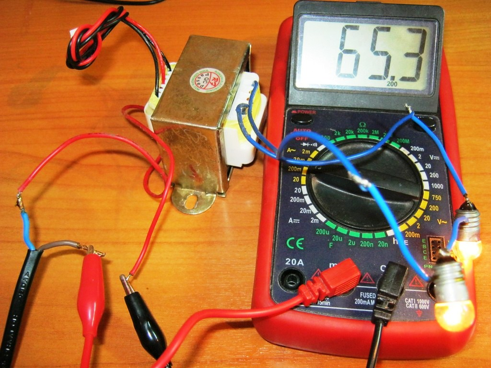
Рис. 6 - Измерение силы тока первичной обмотки трансформатора с нагрузкой
Вывод: Как только мы нагрузили нагрузкой вторичную обмотку, наши лампочки стали сразу потреблять силу тока, а также сила тока поднялась и в цепи первичной обмотки. Чем выше сила тока во вторичной обмотке, тем выше сила тока и в первичной обмотке.
- Измерьте напряжение на вторичной обмотке трансформатора без нагрузки. В нашем примере 22,2 В (рис. 7).
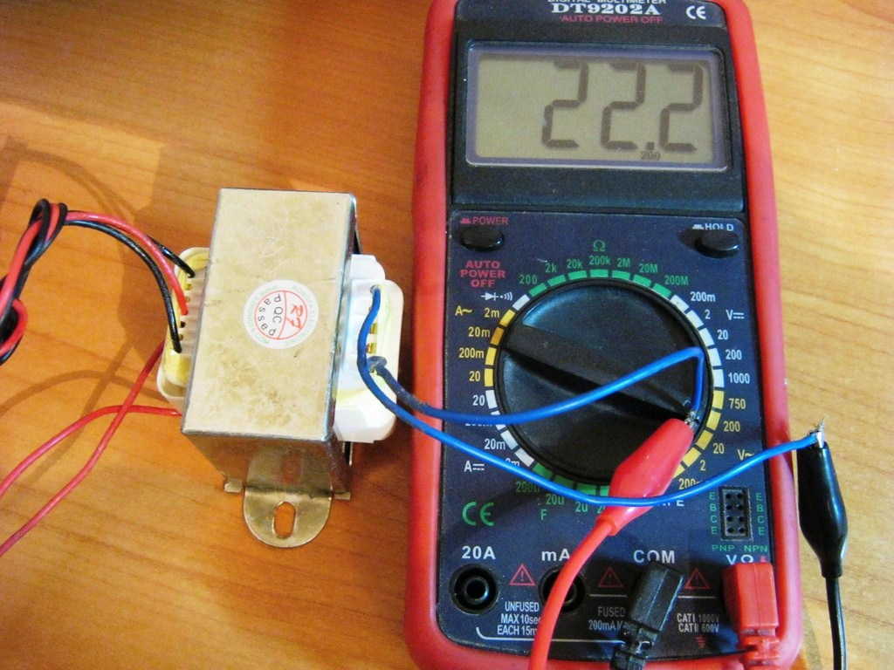
Рис. 7 -
- Подключите лампочки ко вторичной обмотке трансформатора и измерьте напряжение на вторичной обмотке трансформатора. В нашем примере 22,0 В (рис. 8).
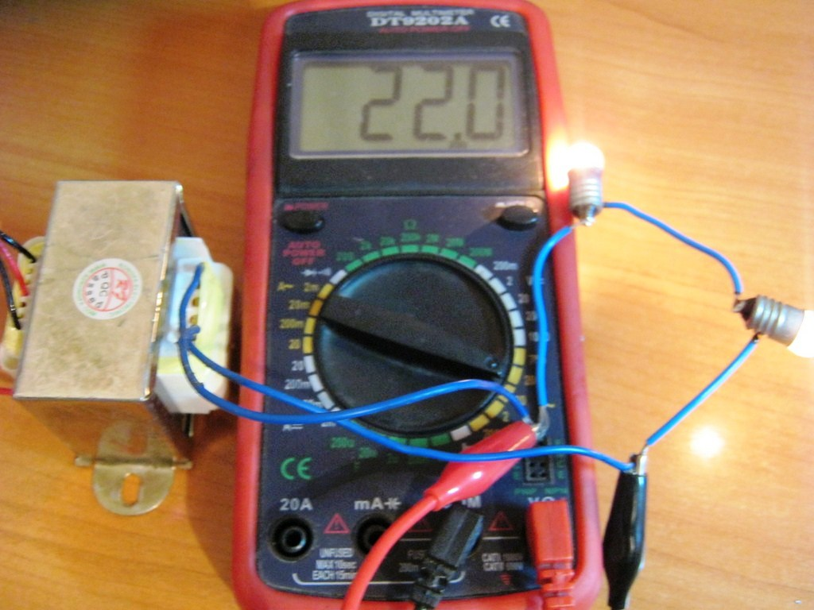
Рис. 8 -
- Измерьте силу тока во вторичной обмотке с лампочками.
В нашем примере 105 мА (рис. 8).
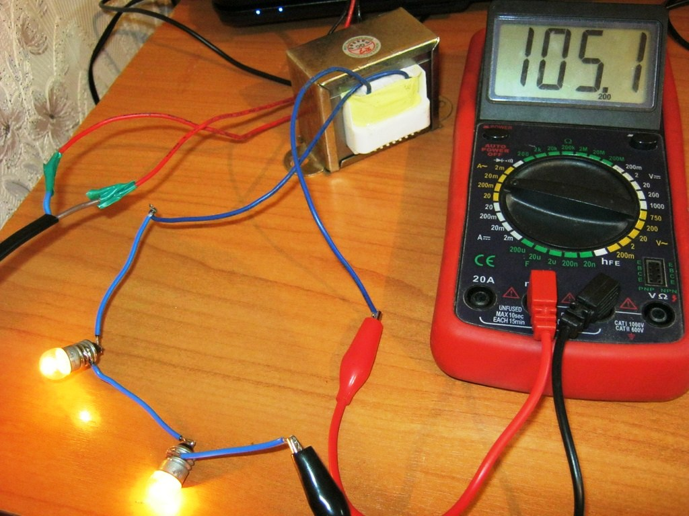
Рис. 9 -
Аналогичные операции проводим и для мощного резистора номиналом в 10 Ом и мощностью рассеивания в 10 Вт. Измеряем напряжение на вторичной обмотке при включении резистора 18,9 В. Напряжение сильно уменьшилась.
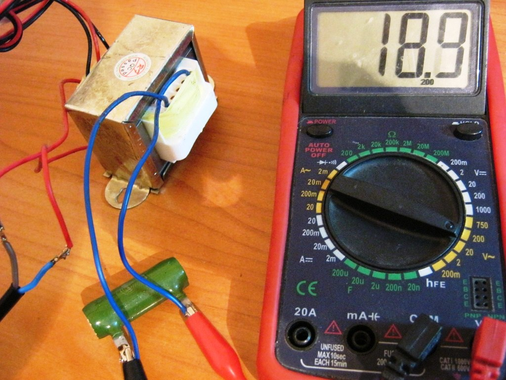
Рис. 18 -
Сила тока во вторичной цепи, в которой включен резистор, почти 2 А (рис. 19).
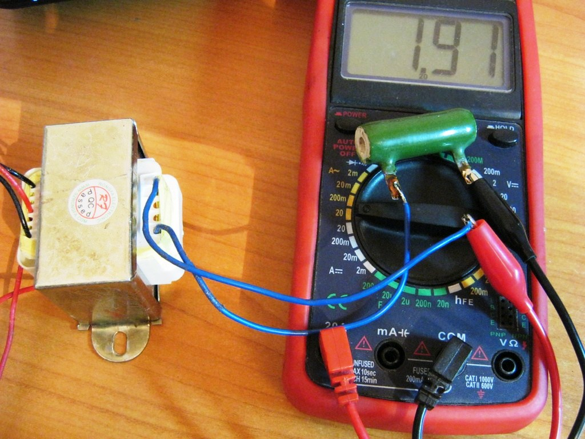
Рис. 19 -
Выводы: при включении нагрузки происходит небольшая просадка напряжения и напряжение падает тем больше, чем больше силы тока потребляет нагрузка.
Здесь также играет роль еще один немаловажный фактор - мощность трансформатора. Чем больше мощность трансформатора, тем меньше просадка напряжения. Мощность трансформатора зависит от его размера. А чем больше трансформатор, тем больше его размер сердечника и следовательно, такой трансформатор будет мощнее. Также, чем меньше вторичных обмоток, тем лучше. Покупая мощный трансформатор, первым делом смотрите чтобы была одна первичная и одна вторичная обмотки, и конечно же, чтобы был погабаритнее сам трансформатор.
Источники:
ruselectronic.com - Устройство трансформатора
ruselectronic.com - Работа трансформатора
sesaga.ru - Устройство и принцип работы трансформатора
radio-uchebnik.ru - Как расчитать параметры трансформатора
В. А. Волгов – «Детали и узлы радио-электронной аппаратуры», Энергия, Москва 1977 г.
В. Н. Ванин – «Трансформаторы тока», Издательство «Энергия» Москва 1966 Ленинград.
И. И. Белопольский – «Расчет трансформаторов и дросселей малой моности», М-Л, Госэнергоиздат, 1963 г.
В. Г. Борисов, – «Юный радиолюбитель», Москва, «Радио и связь» 1992 г.